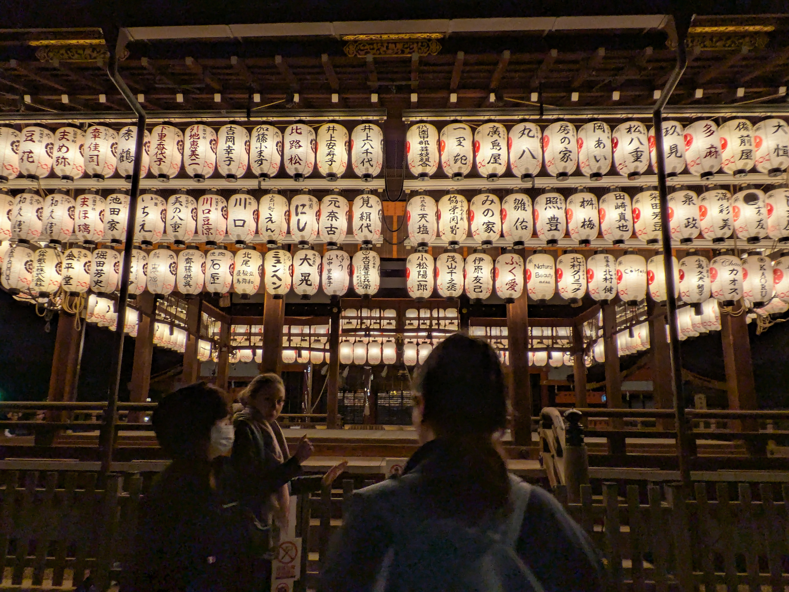
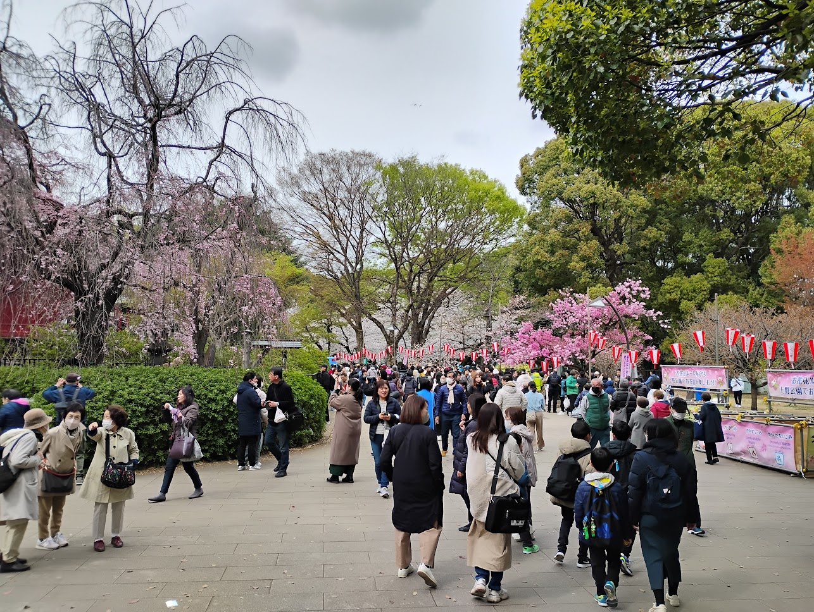
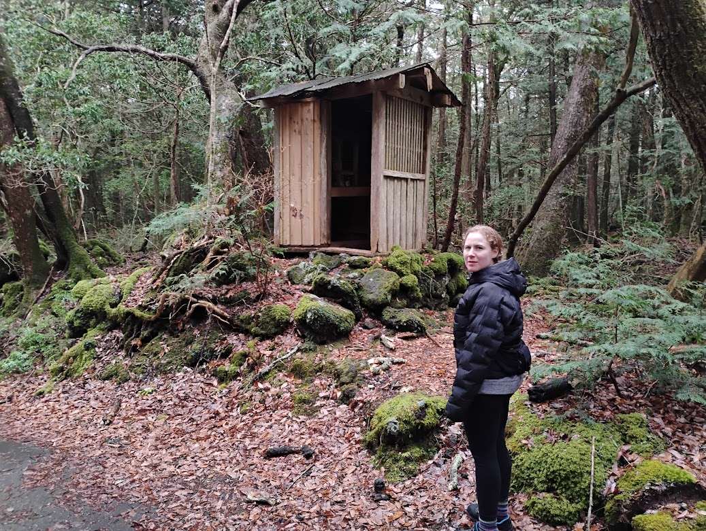

Japan
A shrine found while walking through Kyoto.

Torii Gates to Mount Inari.
In Japan, I visited Fushimi Inari Taisha in Kyoto, a Shinto shrine dedicated to Inari Ōkami, the kami (spirit) of rice, agriculture, and business. The shrine dates back to 711 AD and is best known for its senbon torii — thousands of vermilion torii gates donated by individuals and businesses — which form paths up Mount Inari. The fox statues throughout the shrine grounds represent kitsune, believed to be Inari's messengers.

Ueno Park during cherry blossom season.
In Tokyo, I went to Ueno Park, a large public park established in 1873 on land that once belonged to Kaneiji Temple, a major religious center during the Edo period. Ueno Park is one of Japan's first Western-style parks and is well known for hanami (cherry blossom viewing), which became popular in the Edo era and continues to draw large crowds each spring.

An installation for Spirited Away in Ghibli Park.
I also visited Ghibli Park in Aichi Prefecture, which opened in 2022. The park features life-sized recreations and exhibits based on Studio Ghibli films, which are internationally known for their hand-drawn animation and environmental and cultural themes. The park is intended to reflect the atmosphere of the films rather than function like a traditional amusement park.

What may be a shrine in Aokigahara Forest.
Lastly, I went to Aokigahara Forest near the base of Mount Fuji. The forest is located on hardened lava from an eruption of Mount Fuji in the year 864. It is known for its unusually dense vegetation and limited wildlife. In recent decades, Aokigahara has become internationally known for its association with suicide, and signs are posted throughout the area encouraging visitors to seek help. This reputation has led to the forest being featured in books, films, and media, though local efforts continue to promote respectful visitation and increased awareness around mental health.